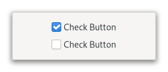

Gtk.CheckButton¶
Example¶
- Subclasses
None
Methods¶
- Inherited
Gtk.Widget (181), GObject.Object (37), Gtk.Accessible (15), Gtk.Buildable (1), Gtk.Actionable (5)
- Structs
class |
|
class |
|
class |
|
|
|
|
|
|
|
|
|
|
|
|
|
|
|
|
|
|
Virtual Methods¶
- Inherited
Gtk.Widget (25), GObject.Object (7), Gtk.Accessible (6), Gtk.Buildable (9), Gtk.Actionable (4)
|
|
|
Properties¶
- Inherited
Name |
Type |
Flags |
Short Description |
|---|---|---|---|
r/w/en |
|||
r/w/en |
|||
w |
|||
r/w/en |
|||
r/w/en |
|||
r/w/en |
Signals¶
- Inherited
Name |
Short Description |
|---|---|
Emitted to when the check button is activated. |
|
Emitted when the buttons’s [property`Gtk`.CheckButton:active] property changes. |
Fields¶
- Inherited
Name |
Type |
Access |
Description |
|---|---|---|---|
parent_instance |
r |
Class Details¶
- class Gtk.CheckButton(**kwargs)¶
- Bases
- Abstract
No
- Structure
A
GtkCheckButtonplaces a label next to an indicator.Example GtkCheckButtons
A
GtkCheckButtonis created by calling either [ctor`Gtk`.CheckButton.new] or [ctor`Gtk`.CheckButton.new_with_label].The state of a
GtkCheckButtoncan be set specifically using [method`Gtk`.CheckButton.set_active], and retrieved using [method`Gtk`.CheckButton.get_active].- Inconsistent state
In addition to “on” and “off”, check buttons can be an “in between” state that is neither on nor off. This can be used e.g. when the user has selected a range of elements (such as some text or spreadsheet cells) that are affected by a check button, and the current values in that range are inconsistent.
To set a
GtkCheckButtonto inconsistent state, use [method`Gtk`.CheckButton.set_inconsistent].- Grouping
Check buttons can be grouped together, to form mutually exclusive groups - only one of the buttons can be toggled at a time, and toggling another one will switch the currently toggled one off.
Grouped check buttons use a different indicator, and are commonly referred to as *radio buttons*.
Example GtkCheckButtons
To add a
GtkCheckButtonto a group, use [method`Gtk`.CheckButton.set_group].When the code must keep track of the state of a group of radio buttons, it is recommended to keep track of such state through a stateful
GActionwith a target for each button. Using thetoggledsignals to keep track of the group changes and state is discouraged.- CSS nodes
`` checkbutton[.text-button] ├── check ╰── [label] ``
A
GtkCheckButtonhas a main node with name checkbutton. If the [property`Gtk`.CheckButton:label] or [property`Gtk`.CheckButton:child] properties are set, it contains a child widget. The indicator node is named check when no group is set, and radio if the checkbutton is grouped together with other checkbuttons.- Accessibility
GtkCheckButtonuses theGtk.AccessibleRole.CHECKBOXrole.- classmethod new_with_label(label)[source]¶
- Parameters
- Returns
a new
GtkCheckButton- Return type
Creates a new
GtkCheckButtonwith the given text.
- classmethod new_with_mnemonic(label)[source]¶
- Parameters
label (
strorNone) – The text of the button, with an underscore in front of the mnemonic character- Returns
a new
GtkCheckButton- Return type
Creates a new
GtkCheckButtonwith the given text and a mnemonic.
- get_active()[source]¶
- Returns
whether the check button is active
- Return type
Returns whether the check button is active.
- get_child()[source]¶
- Returns
the child widget of self
- Return type
Gtk.WidgetorNone
Gets the child widget of self or
NULLif [property`CheckButton`:py:data::label<Gtk.CheckButton.props.label>] is set.New in version 4.8.
- get_label()[source]¶
- Returns
The label self shows next to the indicator. If no label is shown,
Nonewill be returned.- Return type
Returns the label of the check button or
NULLif [property`CheckButton`:py:data::child<Gtk.CheckButton.props.child>] is set.
- get_use_underline()[source]¶
- Returns
The value of the [property`Gtk`.CheckButton:use-underline] property. See [method`Gtk`.CheckButton.set_use_underline] for details on how to set a new value.
- Return type
Returns whether underlines in the label indicate mnemonics.
- set_active(setting)[source]¶
- Parameters
setting (
bool) – the new value to set
Changes the check buttons active state.
- set_child(child)[source]¶
- Parameters
child (
Gtk.WidgetorNone) – the child widget
Sets the child widget of self.
Note that by using this API, you take full responsibility for setting up the proper accessibility label and description information for self. Most likely, you’ll either set the accessibility label or description for self explicitly, or you’ll set a labelled-by or described-by relations from child to self.
New in version 4.8.
- set_group(group)[source]¶
- Parameters
group (
Gtk.CheckButtonorNone) – anotherGtkCheckButtonto form a group with
Adds self to the group of group.
In a group of multiple check buttons, only one button can be active at a time. The behavior of a checkbutton in a group is also commonly known as a *radio button*.
Setting the group of a check button also changes the css name of the indicator widget’s CSS node to ‘radio’.
Setting up groups in a cycle leads to undefined behavior.
Note that the same effect can be achieved via the [iface`Gtk`.Actionable] API, by using the same action with parameter type and state type ‘s’ for all buttons in the group, and giving each button its own target value.
- set_inconsistent(inconsistent)[source]¶
-
Sets the
GtkCheckButtonto inconsistent state.You should turn off the inconsistent state again if the user checks the check button. This has to be done manually.
- set_label(label)[source]¶
-
Sets the text of self.
If [property`Gtk`.CheckButton:use-underline] is
True, an underscore in label is interpreted as mnemonic indicator, see [method`Gtk`.CheckButton.set_use_underline] for details on this behavior.
- set_use_underline(setting)[source]¶
- Parameters
setting (
bool) – the new value to set
Sets whether underlines in the label indicate mnemonics.
If setting is
True, an underscore character in self's label indicates a mnemonic accelerator key. This behavior is similar to [property`Gtk`.Label:use-underline].
- do_activate() virtual¶
- do_toggled() virtual¶
Signal Details¶
- Gtk.CheckButton.signals.activate(check_button)¶
- Signal Name
activate- Flags
- Parameters
check_button (
Gtk.CheckButton) – The object which received the signal
Emitted to when the check button is activated.
The
::activatesignal onGtkCheckButtonis an action signal and emitting it causes the button to animate press then release.Applications should never connect to this signal, but use the [signal`Gtk`.CheckButton::toggled] signal.
The default bindings for this signal are all forms of the <kbd>␣</kbd> and <kbd>Enter</kbd> keys.
New in version 4.2.
- Gtk.CheckButton.signals.toggled(check_button)¶
- Signal Name
toggled- Flags
- Parameters
check_button (
Gtk.CheckButton) – The object which received the signal
Emitted when the buttons’s [property`Gtk`.CheckButton:active] property changes.
Property Details¶
- Gtk.CheckButton.props.active¶
- Name
active- Type
- Default Value
- Flags
If the check button is active.
Setting
activetoTruewill add the:checked:state to both the check button and the indicator CSS node.
- Gtk.CheckButton.props.child¶
- Name
child- Type
- Default Value
- Flags
The child widget.
New in version 4.8.
- Gtk.CheckButton.props.group¶
- Name
group- Type
- Default Value
- Flags
The check button whose group this widget belongs to.
- Gtk.CheckButton.props.inconsistent¶
- Name
inconsistent- Type
- Default Value
- Flags
If the check button is in an “in between” state.
The inconsistent state only affects visual appearance, not the semantics of the button.
- Gtk.CheckButton.props.label¶
- Name
label- Type
- Default Value
- Flags
Text of the label inside the check button, if it contains a label widget.